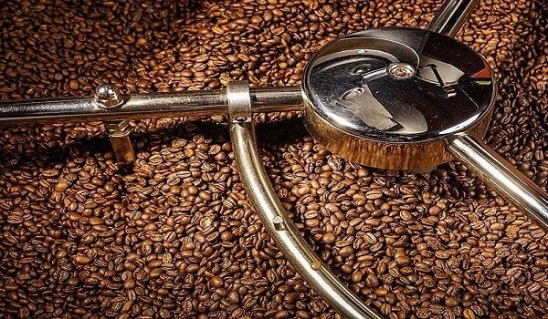
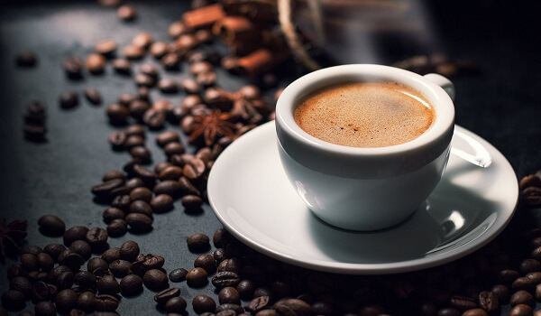

Ly cà phê mà bạn uống hàng ngày nhìn đơn giản nhưng lại được tạo ra từ một quy trình sản xuất cà phê chuyên nghiệp. Bạn đã biết chưa?
Thực tế, quy trình sản xuất cà phê bao gồm nhiều công đoạn phức tạp và yêu cầu nghiêm ngặt về tiêu chuẩn chế biến. Từ thu hoạch, lựa chọn từng hạt cà phê chất lượng cho đến phối trộn, rang xay đều phải vô cùng kỹ lưỡng. Quy trình càng chặt chẽ, chuyên nghiệp, ly cà phê bạn thưởng thức sẽ càng có hương vị tuyệt vời hơn. Vậy, quy trình sản xuất này gồm những gì, việc xử lý ra sao, cần lưu ý như thế nào? Mời bạn cùng theo chân King Coffee đi tìm hiểu ngay trong bài viết sau đây nhé!
Cà phê là loại cây thân gỗ, độ cao trung bình từ khoảng 2m đến 4m với nhiều đốt và cành thon dài đẹp mắt. Là cà phê có hình Oval, màu xanh thẫm, tương đối rộng với từ 4 đến 6cm. Hoa của loại cây này lại có màu trắng tinh khôi, thuần khiết với 5 cánh trên mỗi hoa và nở thành chùm vô cùng ấn tượng. Hoa có hương thơm dịu nhẹ, thoang thoảng tựa như hương hoa nhài. Dựa vào thời gian ra hoa, người trồng cây có thể phán đoán được cây năm đó sẽ cho mùa vụ thất hay trúng.
Cây cà phê là một trong những loại cây được trồng nhiều ở các vùng đất Bazan như cao nguyên núi lửa, nham thạch. Bởi, chúng đáp ứng đủ điều kiện về ánh sáng, nhiệt độ và lượng mưa cao để cây phát triển tươi tốt. Song, không phải cây cà phê nào cũng thích hợp với cùng một điều kiện tự nhiên, khí hậu. Chúng có sự khác biệt với nhau tùy theo mỗi giống cà phê riêng.
Quả chính là thành phần tạo nên những hạt cà phê thơm bổ sau các quy trình sản xuất cà phê. Quả có màu xanh, hình bầu dục, khi chín sẽ chuyển sang màu màu hoặc vàng hơi ngả đỏ. Mỗi quả cà phê sẽ bao gồm phần thịt quả mọng nước bên ngoài và 2 hạt cà phê được bao bọc bên trong. Ngoài ra, bên ngoài hạt còn được phủ lấy bởi 2 lớp vỏ nằm sát nhau là vỏ lụa và vỏ thóc cứng màu vàng.
Về nguồn gốc, cà phê được biết là do người Pháp đưa sang Việt Nam để trồng từ những năm 1857. Những hạt giống này bắt nguồn từ đảo Martinique và vùng Guyane thuộc Pháp ở châu Mỹ Latinh. Vì sở hữu khí hậu và thổ nhưỡng nhiệt đới tương tự các vùng đất này mà Việt Nam trồng được cà phê. Ở nước ta, những vùng đất trồng được cà phê bao gồm các tỉnh phía Bắc, miền Trung và vùng núi Tây Nguyên.
Ngày nay, cà phê không chỉ trở thành thức uống phổ biến của người dân cả trong và ngoài nước. Mà, chúng còn được xếp vào dạng cây công nghiệp lâu năm mang lại hiệu quả kinh tế cao cho người nông dân. Cà phê sau quá trình chế biến đạt chuẩn còn được xuất khẩu ra các nước trên toàn thế giới. Chúng trở thành niềm tự hào mãnh liệt của người Việt ta dù chỉ là một hạt giống xuất phát từ nước ngoài.
Trong 1 ly cà phê sóng sánh thơm ngon là cả một quá trình dài từ trồng trọt, chăm sóc cho đến chế biến. Nội dung tiếp theo, mời bạn cùng tham khảo quy trình sản xuất cà phê cụ thể nhất. Quy trình này bao gồm 6 bước chính, mỗi bước giữ 1 vai trò quan trọng khác nhau. Tất cả kết hợp lại tạo thành một ly cà phê ngon đúng điệu mà bất kỳ ai cũng không thể bỏ qua.
Từ 1 hạt giống cà phê, người nông dân sẽ ươm trồng để phát triển thành cây non xanh tươi tốt trên những tấm gỗ mỏng lớn trong vườn. Nhờ quá trình tưới nước thường xuyên, che bóng mát khỏi những ánh sáng mặt trời, cây khỏe khoắn và được mang ra vườn để trồng chính thức. Sau khi cà phê ra hoa kết quả, người nông dân sẽ tiến hành thu hoạch theo đúng tiêu chuẩn.
Chất lượng cà phê đảm bảo đủ tiêu chuẩn về mặt kỹ thuật cũng như cảm quan và tiêu chuẩn về chất lượng hóa học. Có như vậy, đến công đoạn chế biến, hạt cà phê mới cho ra sản phẩm toàn diện và hoàn hảo nhất.
Việc thu hoạch có thể được thực hiện hoàn toàn bằng tay mà không có sự hỗ trợ của máy móc. Hoặc, chúng cũng được thực hiện với phương pháp máy móc bằng cách tước cành. Nếu thu hoạch thủ công bằng tay, bạn có thể hái được những trái chín hoàn toàn, chất lượng trái đồng đều hơn. Song, thu hoạch bằng máy lại giúp giảm thiểu lao động và ít tốn nhiều công sức. Tuy nhiên, trái thu hoạch bằng máy thường không có sự đồng đều, sẽ có hạt chưa đủ chín.
Ở quá trình này, quy trình sản xuất cà phê sẽ là làm sạch và loại bỏ các tạp chất có trên trái cà phê. Những tác nhân bên ngoài như: Cát, sạn, vỏ, lá, cành,… tất cả đều được sơ chế sạch sẽ nhất. Công đoạn này rất quan trọng, bởi chúng có ảnh hưởng trực tiếp đến chất lượng của sản phẩm sau khi thành phẩm. Ngoài ra, chúng cũng hạn chế được việc làm hỏng, nhanh xuống cấp các trang thiết bị chế biến. Nhất là khi phải chế biến trong điều kiện trái, quả còn nhiều tạp chất.
Quá trình sơ chế, làm sạch trái cà phê bao gồm các công đoạn sau:
Quá trình phối trộn cà phê được tạo ra nhằm đem đến nhiều sản phẩm cà phê đa dạng, phong phú hơn. Việc phối trộn theo tỷ lệ khác nhau sẽ cho ra các hương vị khác nhau, không trộn lẫn được. Người chế biến tùy ý trộn phối theo một công thức chuẩn nào đó giữa các loại cà phê với nhau. Thế nhưng, thông thường, người ta thường phối trộn cà phê Robusta và Arabica với các tỷ lệ riêng biệt.
Tùy theo khẩu vị của khách hàng hoặc theo yêu cầu của đại lý, người chế biến có thể phối trộn theo tỷ lệ 2:8, 3:7 hoặc 5:5. Mỗi tỷ lệ cũng có thể cho ra một thành phẩm độc lập, thậm chí là một thương hiệu riêng. Lúc này, thực khách sẽ dựa theo sở thích của mình mà chọn một loại cà phê phù hợp nhất.
Rang cà phê được xem là một trong những công đoạn quyết định trong quy trình sản xuất cà phê. Bởi, cách rang có thể sẽ tác động đến hương vị và chất lượng của sản phẩm cà phê thành phẩm. Thông thường, một mẻ rang sẽ mất thời gian tương đối từ 1 đến 16 phút. Đồng thời, người rang cà phê có thể lựa chọn 1 trong 2 cách rang là rang truyền thống và rang bằng máy hiện đại.
Quá trình rang cà phê bao gồm những công đoạn cụ thể sau:
Lưu ý, chỉ nên dừng ở nhiệt độ này vì nếu vượt quá nhiệt độ, thành phẩm sẽ không còn vị cà phê gốc nữa. Cà phê sau khi rang xong phải được làm nguội ngay và đem đi bảo quản để hương vị và mùi thơm không bị biến mất dần.
Nếu muốn thưởng thức cà phê, bạn cần đem những hạt cà phê vừa rang đi xay nhuyễn thành bột. Cà phê xay sẽ giúp bạn có được ly cà phê nhanh chóng hơn, tiện dụng hơn, nhất là rất hiệu quả trong quá trình đóng gói. Việc xay cà phê càng mịn, thì quá trình pha chế sẽ càng nhanh chóng hơn.
Công đoạn đóng gói ra đời nhằm mục đích lưu giữ hương vị đậm đà và thơm ngon nhất của cà phê. Đây cũng là cách để bạn hạn chế đến mức cao nhất việc cà phê lẫn mùi lạ và bị Oxy hóa. Các sản phẩm cà phê sau khi được đóng gói bao bì cẩn thận cũng dễ dàng bảo quản hơn, thời gian sử dụng dài hơn. Đương nhiên, cà phê xay nhỏ mịn sẽ thuận tiện hơn trong khi vận chuyển nếu bạn đóng gói chúng cẩn thận. Các thương hiệu cà phê cũng tận dụng công đoạn này để truyền tải hình ảnh của mình sinh động hơn, ấn tượng hơn nữa.
Nếu bạn lo sợ các sản phẩm bột cà phê hoặc hạt cà phê rang bày bán trên thị trường không chất lượng. Thì, tự rang xay thủ công tại nhà là lựa chọn hoàn hảo để có một ly cà phê sạch, nguyên chất và thơm ngon đúng chuẩn. Quá trình tự rang xay cà phê thủ công cũng khiến người mê cà phê tận hưởng hơn, nghệ sĩ hơn.
Dưới đây là quy trình rang xay cà phê thủ công mà bạn có thể tham khảo, học hỏi:
Bước 1: Việc làm trước tiên vẫn là lựa chọn nhân hạt cà phê sao cho chúng đồng đều nhất về kích thước và chất lượng.
Bước 2: Sau đó, bạn chuẩn bị đầy đủ những dụng cụ để phục vụ rang xay cà phê bao gồm: Thìa gỗ, bếp rang, chảo có đáy dày, máy xay,…
Bước 3: Tiến hành rang xay cà phê thủ công theo những cách phổ biến sau đây:
Bước 4: Dùng máy xay để xay cà phê đã rang thành bột thật mịn nhuyễn và đem đi pha thưởng thức.